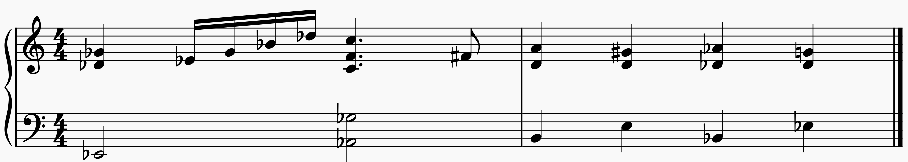

Harmonic identity
The symbolic progression is fixed throughout the experiment.
Invariant: ii7 → V7 → Imaj7 in C major. Every sounding pitch is checked against these chord pitch classes before playback.
Exact-note local piano WAVs · no runtime transposition.
Choose a realization
Chord symbols stay fixed; register, spacing and inversion may change.
Pitch safeguard
| Chord | Note | MIDI | Pitch class | WAV | Valid |
|---|
Pitch trajectories
Each grey path is one ordered voice. The colored paths locate the 3rd/7th guide-tone tendencies inside the selected realization.
ordered voicesF → F → EC → B → B
–
Total voice movement · semitones
–
Largest single-voice leap · semitones
How is total voice movement calculated?
For each ordered voice, take the absolute semitone displacement from Dm7 to G7 and from G7 to Cmaj7, then sum all eight displacements. It is a simple descriptor of pitch movement, not an aesthetic score.
A/B listening
Store two realizations, compare their displacement descriptors, then listen without changing the harmonic progression.
A
Nothing stored
–
B
Nothing stored
–
Guide tones
The progression contains two especially informative tendencies:
F → F → E
C → B → B
The display finds those pitch classes in the actual selected voicing, so their octave placement can change while their harmonic roles remain identifiable.
Experiment
- Listen to two curated realizations.
- Compare their trajectories and displacement values.
- Generate a constrained random realization.
- Listen only to the guide tones.
- Ask what changed without changing the chord sequence.
Repertoire connection
Relate the controlled experiment to the Chapter 5 excerpt from ’Round Midnight.

Course-material excerpt supplied for Chapter 5. Rights/permissions for commercial distribution should be handled separately.
What changed?
- register and spacing
- inversion
- individual pitch trajectories
- total pitch displacement
- largest local leap
What remained invariant?
- the symbolic chord sequence
- the harmonic functions ii–V–I
- the chord pitch-class content
- the guide-tone tendency
- the tonal destination, C major